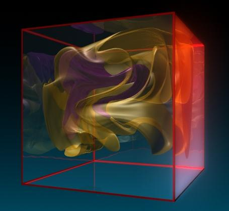
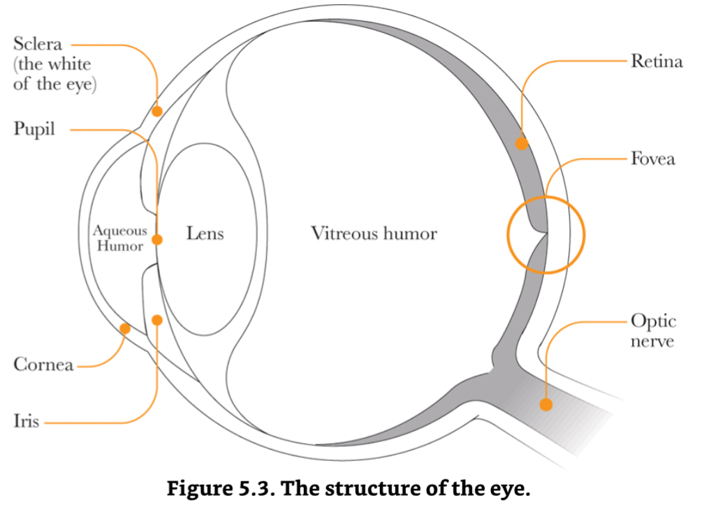
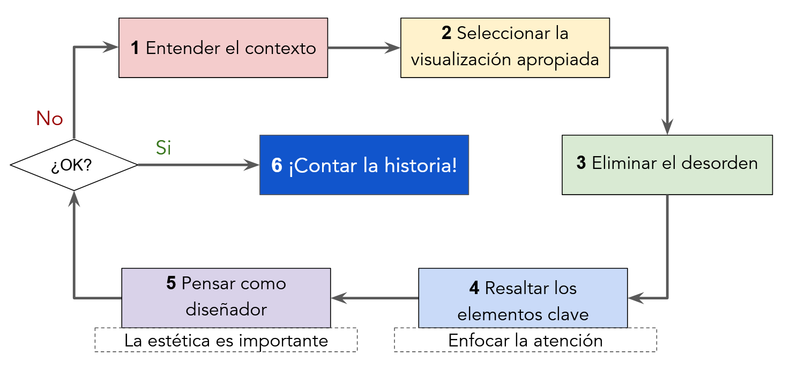

Storytelling
with data
Depto. de Recursos Naturales, IGEF-UNAM
2026-03-24
Contenido
- SciVis and Visual Analytics.
- Visión y percepción.
- Preattentive features.
- El proceso.
SciVis and Visual Analytics.
Scientific Visualization.

{kind=link}
{kind=link}
{kind=link}
Visual Analytics.
Visual analytics (análisis visual) es un campo multidisciplinario de la ciencia y la tecnología que surgió de la visualización científica (Visualization) y la visualización de la información (InfoViz). Se centra en cómo las interfaces visuales interactivas pueden facilitar la exploración de datos complejos, identificar patrones y promover el razonamiento analítico para obtener información útil.
IEEE Vis 2026: Visualization & Visual Analytics.
Visual Analytics.
- Convertir la información en conocimientos prácticos.
- Comprender las necesidades de información del grupo de usuarios objetivo.
- Determinar qué tipo de datos son los necesarios y qué técnicas de visualización se deben usar.
- Utilizar parámetros visuales: color, contraste, distancia, tamaño, …, para crear una jerarquía visual adecuada y una ruta visual óptima a través de la información.
Visual Analytics and Storytelling.
There’s always room for a story that can transport people to another place. J. K. Rowling.
- The brain science of storytelling
- Cortisol: enfoca la atención.
- Oxitocina: conexión y empatía.
- The best stats you’ve ever seen
{kind=link}
Visión y percepción.
Los conceptos y figuras de esta sección provienen de (Cairo, 2013).
El ojo humano.

Células fotoreceptoras:
- Bastones: muy sensibles a la luz débil, no distinguen color.
- Conos: Perciben el color.
Fóvea (~0.3mm):
- Libre de bastones, contiene muchos conos, provee la información más clara y detallada, ahí se enfocan los rayos luminosos.
Visión periférica y mov. sacádicos
{kind=link}
{kind=link}
{kind=link}
{kind=link}
El cerebro visual
{kind=link}
{kind=link}
- Lo que ve la retina, no es exactamente lo que el cerebro percibe.
- El cerebro completa información con base en lo que conoce, es eficiente.
La visión está compuesta de: vista, percepción y cognición.
Moraleja: si el cerebro le da prioridad a ciertos objetos, entonces prioricemos de antemano.
Preattentive features.
Los conceptos y figuras de esta sección provienen de (Cairo, 2013).
¿Qué son?
Preattentive features: propiedades de las imágenes que se procesan en nuestra memoria espacial sin una acción consciente.
Son procesadas en ~0.5 s por nuestro sistema visual.
El mayor valor de una imagen se nota cuando nos obliga a fijarnos en lo que nunca esperábamos ver, John Tukey.
¿Cuáles son?
Colin Ware (2013) define cuatro familias de preattentive features:
- Color. RGB (Red, Green, Blue), sistema aditivo, que usa una estructura hexadecimal #F453A2. HTML colors.
- Forma. Colinealidad, curvatura, longitud, amplitud, ancho, marcadores, cantidad, patrón, tamaño, agrupamiento, orientación, …
- Movimiento. Parpadeo y movimiento espacial.
- Posicionamiento espacial. La forma más efectiva es en 2D.
Ejemplos.
{kind=link}
{kind=link}
{kind=link}
{kind=link}
- El cerebro detecta más fácilmente las diferencias en contraste y color, que las formas.
Leyes de la forma (gestalt).
El cerebro detecta patrones.
- Proximidad.
- Similaridad.
- Conectividad.
- Continuidad.
- Agrupamiento.
- Cierre.
- Familiaridad.
{kind=link}
{kind=link}
{kind=link}
{kind=link}
{kind=link}
Clasificación de Cleveland y McGill.
La clasificación CM (Clevaland & McGill, 1984) es un método para representar datos y determinar diferencias en la información con precisión o de forma más genérica.
{kind=link}
El proceso.
Storytelling with data.

(Nussbaumer, 2025) y (Nussbaumer, 2019).
Referencias.
Cairo, A. (2013). The Functional Art: An Introduction to Information Graphics and Visualization. United Kingdom: New Riders.
Nussbaumer Knaflic, C. (2025). Storytelling with Data: A Data Visualization Guide for Business Professionals, 10th Anniversary Edition. United Kingdom: John Wiley & Sons, Limited.
Nussbaumer Knaflic, C. (2019). Storytelling with Data: Let’s Practice! The Workbook. United Kingdom: Wiley.
Ware, C. (2013). Information Visualization: Perception for Design. Germany: Elsevier Science.
Cleveland, W. S., & McGill, R. (1984). Graphical perception: Theory, experimentation, and application to the development of graphical methods. Journal of the American Statistical Association, 79(387), 531.

Narrativas con datos